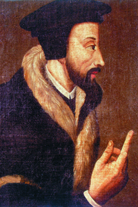
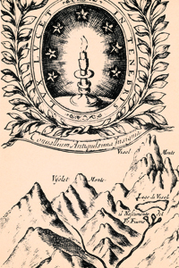
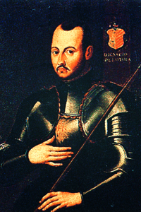

Lezione 12  Riforma e controriforma
Riforma e controriforma

-
195
225
-
195
265
-
285
120
-
150
280
-
240
320

GINEVRA
1541: a Giovanni Calvino (1509-1564), che qui vediamo ritratto da un anonimo pittore cinquecentesco, si deve l’azione riformatrice in Svizzera: da lui prenderà nome il calvinismo, una variante delle dottrine luterane basata sulla predestinazione, ma con un occhio di riguardo per la condotta etica ed economica dell’uomo nelle azioni terrene. 
PIEMONTE
Un antico emblema della religione valdese: la scritta latina intorno alla candela accesa recita “La luce risplende nell’oscurità”. I seguaci di Pietro Valdo per sfuggire alle persecuzioni si rifugiano nelle valli piemontesi, dove la loro comunità è ancora oggi molto attiva.
SPAGNA
In risposta alla Riforma protestante la Chiesa cattolica vara la cosiddetta “Controriforma” o “Riforma cattolica”: è in questo contesto che vengono fondati numerosi ordini che hanno come obiettivo la difesa del cattolicesimo contro le dottrine protestanti, la cura e l’aiuto ai deboli e ai poveri e l’evangelizzazione. Il più importante di tali ordini è quello dei gesuiti, fondato dallo spagnolo sant’Ignazio di Loyola, qui in un anonimo ritratto seicentesco.RATISBONA
1541: La rottura definitiva tra cattolicesimo e protestantesimo viene sancita con la Dieta di Ratisbona. La Chiesa fissa i punti di non ritorno: preminenza assoluta della gerarchia, centralismo papale, uniformità liturgica e disciplinare. L’esigenza di un rinnovamento della Chiesa è un fenomeno esteso e sentito, che provoca una “riforma” cattolica. Sorgono nel seno della Chiesa nuovi ordini religiosi, dediti alla cura dei poveri e dei bisognosi, tra cui i Cappuccini (un ramo dell’ordine francescano), le Orsoline (congregazione femminile dedita all’educazione, fondata dalla bresciana sant’Angela Merici nel 1535), i Gesuiti della potente Compagnia di Gesù, fondata nel 1540 da Ignazio di Loyola. Questi ultimi in particolare sono caratterizzati da una struttura rigida e gerarchica, hanno una vocazione missionaria molto forte e uno spiccato interesse per la formazione pedagogica.ROMA
Il papato, per contrastare la diffusione del protestantesimo, riorganizza il tribunale dell’Inquisizione romana e istituisce il Sant’Uffizio, organo di controllo e repressione, tribunale supremo di Roma, da cui dipende una rete di tribunali diffusi sul territorio europeo.